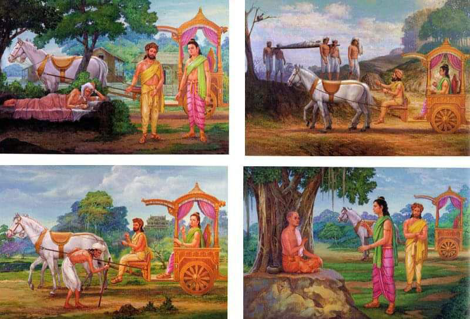

Namo tassa bhagavato arahato sammāsambuddhassa
Homage to the Most Venerable One, the Arhat, the Self-Awakened One
Namo tassa bhagavato arahato sammāsambuddhassa
Homage to the Most Venerable One, the Arhat, the Self-Awakened One
Namo tassa bhagavato arahato sammāsambuddhassa
Homage to the Most Venerable One, the Arhat, the Self-Awakened One
Sabbapāpassa akaraṇaṃ,
Do no evil
Kusalassa upasampadā ;
Accumulate good things
Sacitta pariyo dapanaṃ,
Encourage your mind to comprehend
Etaṃ buddhāna sāsanaṃ
This is Buddha's teaching.
The picture depicts the "four meetings" that led Siddhartha to renounce worldly life.
There may be no mention in the Pali Canon of specific historical circumstances that point to the events that occur in the "four meetings" story that are found in the commentaries and later texts. I could be wrong, though.
In the canon one can find the sutta: Mahapadana Sutta : The Great Discourse on the Lineage of Buddhas (DN 14), which contains the story of Buddha Vipasī, where the description of the "four meetings" is as similar as two peas in a pod to the traditional description of Siddhattha's meetings.
As for Siddhattha, there is a sutta in the canon: Sukhumala Sutta : Refinement (AN 3.39), in which the Buddha describes his luxurious life in three palaces, during which he had thoughts of renunciation:
At the beginning of the sutta, the Buddha describes his luxurious life, and then he says:
"(1) In the midst of such luxury and refined life, the thought came to me: 'An unlearned common man, being himself subject to old age and unable to escape old age, feels repulsion, humiliation, disgust when he sees someone who is old, [but in this case] he does not notice his own situation. For I too am subject to old age and unable to escape old age. Since this is so, if I were to feel repulsion, humiliation, disgust when I see someone who is old, then this would be unbecoming for me.' And when I thought about this, my intoxication with youth was completely discarded.
(2) [The thought came to me]: “An unlearned, ordinary person, being himself subject to illness and unable to avoid illness, feels repulsion, humiliation, disgust when he sees someone who is sick, [but in this case] he does not notice his own situation. For I too am subject to illness and unable to avoid illness. Since this is so, if I were to feel repulsion, humiliation, disgust when I see someone who is sick, then this would be unbecoming for me.” And when I thought about this, my intoxication with health was completely abandoned.
(3) [The thought came to me]: “An unlearned, ordinary person, being himself subject to death and unable to escape death, feels repulsion, humiliation, disgust when he sees someone who has died, [but in this case] he does not notice his own situation. For I too am subject to death and unable to escape death. Since this is so, if I were to feel repulsion, humiliation, disgust when I see someone who has died, then this would be unbecoming for me.” And when I thought about this, my intoxication with life was completely abandoned..."
It is impossible to say for sure whether the "four meetings" are a legend, an outward manifestation of an experience that arose from an inner search, or whether everything really happened exactly as the story that has come down to us tells. One thing is certain: the story of the four meetings vividly summarizes some of the fundamental teachings of the Buddha.
This story is often told like this:
So Siddhattha lived in Kapilavatthu, enjoying luxury and comfort. When he was 29 years old, one day he wanted to visit the royal garden. He called the charioteer and said, "Charioteer, prepare the chariot! I want to go to the royal garden." "As you say," replied the charioteer, and prepared the chariot, drawn by four purebred horses, snow-white in color, like the full moon or a white lotus flower. When the chariot was ready, the charioteer announced it, and Siddhattha got into it, going to the royal garden, accompanied by a magnificent procession.
When the prince was going to the garden, he was accompanied by a troop of soldiers. When the chariot had moved ahead of the procession, leaving the soldiers behind, the great Brahma of Suddhavasa’s abode used his supernatural powers to create the image of an old man in front of the chariot. This image could be seen only by the prince and his charioteer. The Brahmas of Suddhavasa’s abode thought, “Siddhattha is immersed in the quagmire of the five sense pleasures, like an elephant stuck in a swamp. We should awaken in him a sense of urgency (samvega) by showing him the image of the old man.” Other omens that will appear later should be understood in a similar way. This commentary is taken from the commentary on the Great Discourse on the Traditions (Mahapadana Sutta, Chapter 14).
When Siddhattha had travelled some distance on his way to the royal garden, the devas watching his procession said, "The time is approaching for Siddhattha to become a Buddha. Let us show him signs that will induce him to renounce the world and become a hermit." They asked one of the devas to assume the form of an old man: with white hair, toothless, stooped and trembling, with a cane in his hand. This image of an old man, created by the deva, could be seen only by Siddhattha and his charioteer.
Seeing the old man, Siddhattha asked the charioteer, “This man’s hair is not like other people’s; it is completely white. His body is also different from other people’s bodies: all his teeth have fallen out, there is little flesh on his body, and he is trembling all over, hunched over. What do you call such people?” The charioteer replied, “Respected sir, he is called an old man.” Siddhattha, who had never even heard the word “old man” before, let alone seen it, was surprised.
"Charioteer, if all men, including myself, cannot escape old age, there is no need to go to the royal garden and enjoy the pleasures there. Turn the chariot here and take me back to the palace," he said. "As you say, sir," the charioteer replied and turned the chariot around.
In the wild, when a lion is wounded by an arrow, it does not seek first to remove the arrow, which is the effect, but immediately begins to look for the hunter who shot the arrow, the root cause of its wound. Buddhas, like lions, do not seek to remove the effect, like an arrow, but seek and find the cause, like a hunter shooting a bow. Thus, Buddhas are like lions.
The charioteer explained the nature of decay and old age (jarā) as he understood it, but Siddhattha, as befits one who aspires to become a Buddha, deeply realized that birth (jāti) is the root cause of the process of aging (jarā). Returning to the palace, he was overcome by a sense of urgency (saṃvega): “Oh, birth is truly disgusting. He who sees birth also sees aging.” Reflecting on this, he became sad and remained gloomy and dejected.
Raja Suddhodana, being worried, called the charioteer and asked, “Why did my son return so hastily before reaching the garden?” The charioteer replied, “Respected sir, your son saw the old man and therefore hastened to return.” Raja Suddhodana thought, “My son should become the ruler of the country. He should not renounce the world and become a hermit. The prediction of the brahmins that he would renounce the world and become a hermit should not come true.” He ordered his ministers, “Employ more servants in the palace than before. Let my son be surrounded by more maidservants and dancing girls. Enjoying the five sense pleasures, he will no longer grieve and think of renunciation.” After this, he increased the number of guards in the surrounding areas at every corner and on all roads.
Preoccupied with the five sense pleasures that his father increasingly provided for him, Siddhattha spent his time enjoying luxury. His sense of urgency, born of his awareness of the nature of birth and aging, began to wane.
After four months of this luxurious life, Prince Siddhattha went to the royal garden again in a chariot drawn by purebred horses, as before. On the way, he saw the image of a sick man, which had been created by the devas. This sick man was suffering from severe pain, was weakened by illness, and could sit or lie down only with the help of others. He lay helplessly on his bed, covered in his own filth.
When the prince saw him, he asked the charioteer, "Charioteer, this man's eyes are not like the others; they are weak and unsteady. His voice is also not like the others; he keeps screaming with an unbearable howl. His body is not like the others; it looks emaciated and gives off a sickening smell. By what name is he known?" The charioteer replied, "Respected sir, he is called the sick man."
The prince, who had never seen a sick person before or even heard of a “sick person,” asked, “Chariot driver, what is this? Am I also subject to illness? Will I also not be able to escape it?” The chariot driver replied, “Respected sir, all of us, including you and me, are subject to illness. No one can escape it.” Siddhattha said, “Chariot driver, if all people, including me, cannot escape the nature of illness, we will no longer go to the royal garden to enjoy the pleasures there. Turn around from this place at once and take me back to the palace.” “Okay,” replied the chariot driver, turned the chariot around at the spot where the sick man had been seen, and headed back to the palace.
As stated above, although the charioteer had simply explained the oppressive nature of illness (vyādhi) as he understood it, Siddhattha, like the lion and the one who wishes to become a Buddha, clearly realized that birth (jāti) was the root cause of old age (jarā) and illness (vyādhi). Returning to the palace, he reflected with piercing persistence: “Birth is truly abominable! For one who understands the nature of birth, old age and illness become obvious.” Reflecting in this way, he became sad and morose; he remained gloomy and dejected.
Raja Suddhodana again sent for the charioteer and questioned him as before. When the charioteer replied, "Your Majesty, your son has returned in a hurry because he saw someone sick," Raja Suddhodana thought to himself as before and ordered the guards to be further strengthened, posting them every three miles in the four directions. He also ordered the palace maids and dancers to be changed.
Again distracted by the five sensual pleasures, Siddhattha spent his time enjoying palace life, and his sense of urgency (saṃvega), born of disgust at the nature of birth, old age and disease, diminished somewhat.
When four months had passed, Siddhattha went to the royal garden again as before. On the way he saw the sign created and shown by the devas for the third time - a crowd of people and a litter decorated with colorful cloth. Then he asked the charioteer, "Charioteer, why are all these people gathering around? Why are they carrying a litter decorated with colorful cloth?" The charioteer replied, "Respected sir, people are gathering around and carrying a litter because someone has died."
Siddhattha, who had never seen a dead person before or even heard of the dead, said to the charioteer, “Charioteer, take me to where the dead man lies.” The charioteer replied, “Okay,” and he drove the chariot to where the dead man lay. When the prince saw the dead man, he asked, “What is the nature of this dead man?” The charioteer replied, “Respected sir, when a man dies, his relatives will never see him again, and he himself will never see his relatives again. All of us, including you, are subject to death. There is no one who can escape death. It is certain that one day your father, mother, and relatives will not see you again, and it is equally certain that one day you will not see them again.”
In response, the prince said, "Charioteer, if all beings, every single one of them, including me, cannot escape the nature of dying, we will not go to the royal garden to enjoy the pleasures there. Take me back to the palace." "Okay," the charioteer replied and turned the chariot around.
As stated above, although the charioteer simply explained the mundane nature of death (maraṇa) as best he could, Siddhattha, like the lion and the one who wishes to become a Buddha, clearly realized on reflection that birth (jāti) was the root cause of the three phenomena: old age (jarā), disease (vyādhi), and death (maraṇa).
After his return to the palace, he thought with piercing insistence: "Oh, birth is truly abominable! For whomever birth becomes obvious, old age will certainly become obvious, illness will certainly become obvious, death will certainly become obvious." Thinking in this way, he became morose and dejected.
Raja Suddhodana sent for the charioteer and asked him why they had returned so early. The charioteer replied, "Your Majesty, your son has returned in a hurry because he saw someone dead." Suddhodana reflected to himself as before and ordered that the guard be further strengthened, and Siddhattha be surrounded with even greater attention and more refined entertainment.
After four months, the calmed Siddhattha again ordered the carriage to be equipped for the trip to the amusement park.
On the way he saw another sign created by the devas - a hermit with a clean-shaven head and beard, dressed in clothes dyed the color of a tree. "Charioteer!" said Siddhattha. "This man's head is not like the heads of others: it is clean-shaven, and his beard is shaved off. His clothes are also not like the clothes of others, and are dyed the color of a tree bark. By what name is he known?" The charioteer replied: "Respected sir, he is known as a hermit."
Siddhattha again asked the charioteer, “Charioteer, what is meant by a recluse? Explain to me the nature of a recluse.” The charioteer replied, “Respected sir, a recluse is a person who, remembering that it is good to practice the ten directions of wholesome action (kusala-kamma-patha), beginning with generosity (dāna), has retired from worldly life and has donned a robe dyed brown.
This is a person who, remembering that it is good to practice the ten kinds of wholesome actions that are in accordance with righteousness, free from vice, pure and blameless, has retired from worldly life and put on clothes dyed brown.
He is one who, remembering that it is good to refrain from cruelty to living beings and to act well for their welfare, has retired from worldly life and has donned garments dyed brown.”
Here, although the charioteer knew nothing of the hermits or their virtues, since this was before the appearance of the Buddha and his teaching, he uttered these words under the influence of the power of the devas.
Bodhisattvas with much longer life spans saw the four great signs one after another with an interval of a hundred years between them. However, in the case of our Bodhisatta, who was born in a world with a much shorter life span, the intervals between the signs were four months. According to the *Dīgha Nikāya*, the Bodhisatta realized all four great signs in one day. These notes are based on the commentary to the *Buddhavaṃsa*.
So, thereupon the prince said to the charioteer, "This man is truly admirable for having departed from the world remembering that it is good to practice the ten kinds of wholesome actions that are in accordance with righteousness, that are free from vice, and that are pure. This man is admirable for having departed from the world remembering that it is good to refrain from cruelty to living beings and that one should act for their welfare. Therefore, charioteer, drive the chariot to where this ascetic is."
Saying, “Good,” the charioteer directed the chariot to where the hermit was. Approaching him, Siddhartha asked that form (iddhi-rūpa) created by the maidens, “Man, what are you doing? Your head is not like others; your clothes are also not like others.” When he received the reply from the hermit, which said, “Respected sir, I am known as a hermit,” he asked him further, “What do you mean by a hermit?” And the hermit replied in the same way as the charioteer.
After this, Siddhartha said with recognition and approval, “You are truly admirable.”
The sight of this omen awakened in him a sympathy for the life of a hermit, and, having made the resolution: “I will become a hermit,” he continued his journey to the royal garden.
Of the four kinds of great omens described above, the first three are known as omens that cause a sense of urgency (saṃvega-nimitta), because if birth occurs, there is an inevitable certainty of the manifestation of old age, disease, and death. For one who views these phenomena as terrifying, severe, and terrifying, they cause anxiety.
The last omen, that of the ascetic, is the manifestation that encourages the practice of Dhamma as a way of avoiding the dangers mentioned. Therefore it is called the omen that causes the feeling of longing for practice (padhāna-nimitta).
In Sri Lanka, monks often recite the text of the eight grounds for a sense of urgency (saṃvega vatthu) in vandana. This is one of the most common recitations in all monasteries because it emphasizes the importance of saṃvega, which is the starting point for renunciation and the desire for practice. Saṃvega, caused by the four encounters, awakened in Siddhartha the desire and the desire for renunciation.
Text in Pali:
Bhāvetvā caturārakkhā āvajjeyya anantaraṃ mahāsaṃvegavatthūni, aṭṭha aṭṭhitavīriyo.
Jātijarāvyādhicutī apāyā, atīta-appattakavaṭṭadukkhaṃ, idāni āhāragaveṭṭhidukkhaṃ saṃvegavatthūni imāni aṭṭha.
Pāto ca sāyam-api ceva imaṃ vidhiñño, āsevate satatam-attahitābhilāsi,
pappoti so ti vipulaṃ hatapāripantho,
seṭṭhaṃ sukhaṃ muni visiṭṭhamataṃ sukhena cā ti.
Translation:
Having developed the four guards of the mind (buddhanussati, metta, asubha, maranasati), one should turn to the great foundations of samvega, which awaken diligence.
Birth, old age, illness, death, the hellish realms, the cycle of suffering extending into the infinite past, the cycle of suffering extending into the infinite future, and the cycle of suffering in the present associated with the search for food - these are the eight foundations of samvega.
Morning and evening, following this method,
remembering and constantly striving for his own good,
he will attain the Greatest without obstacles,
the Supreme happiness.
The eight foundations of saṃvega (saṃvega vatthu):
Reflecting on the first four foundations – birth, old age, illness and death – gave birth to samvega in Siddhartha, the desire to destroy the cause of these four dangers at any cost. Old age, illness and inevitable death are what push people who reflect on this and feel an immediate danger in this to seek to overcome these threats. This is how people often come to various religious teachings, including Buddhism. A person who has decided to practice the Noble Eightfold Path discovers four more subsequent foundations of samvega:
By reflecting on them, he can generate even greater diligence and suppress some of the obstacles that hinder the development of the practice.
For example, we can remember the woeful worlds. We can call the animal worlds, the hungry ghost worlds, the hell worlds “our home,” because we spend most of our time in Samsara in these worlds, and only occasionally do we manage to be born in the human world and higher worlds. Reflecting on this danger and the causes that lead to these dangers, we should remember the woeful worlds.
The cycle of suffering that goes back to the past is the birth, aging, illness and death that have happened to us since the beginningless past. Remembering that during this time we have shed more tears and blood than the water in the four oceans, we generate the feeling of samvega.
The cycle of suffering rooted in the future is birth, old age, illness and death, which will happen to us endlessly in the future unless we make an attempt to eliminate their cause and realize Nibbana.
The cycle of suffering in search of food in the world at present is the suffering we experience in the present in order to provide ourselves with food (āhāra).
There are four types of nutrition:
The first two types of food - material food and contact - are the types of food on which we spend all our time from birth to death. Our whole life is built on receiving food to support the body and contact, which nourishes pleasant sensations. Few people think that we spend all our energy on receiving these two types of food, overcoming incredible difficulties and suffering. In this way, we create the next two types of food - volition as food for the next birth and consciousness as food for nama-rupa.
Volitions, or intentional-active actions, such as those to obtain what is pleasant, are rooted in craving (lobha) and ignorance (moha). Volitions undertaken to avoid what is unpleasant are rooted in aversion (dosa) and ignorance (moha). In one second, millions of mental processes (cittavīthi) arise with these volitions, and they produce a huge amount of unwholesome kamma. In one cittavithi, kamma is generated that can bear fruit in this life, in the next life, and in one of the future lives stretching into the horizon of infinity, if the conditions for this arise.
The kamma with lobhā, mohā and dosā that is generated in huge quantities every second can bear fruit at the end of life as an unwholesome object for rebirth consciousness. Therefore it is said that volition (kammanāhāra) is food for the next birth, and this rebirth consciousness will become food for the nāma-rupa in the hell realm or in the animal realm. If birth in hell occurs, it will become a suitable condition for the ripening of those innumerable unwholesome kammas that have been generated as kammas that ripen in future lives if the conditions are there. Birth in hell is precisely this necessary condition for the ripening of these kammas. That is why it is so difficult to get out of the lower realms. The same applies to wholesome kamma and the higher realms.
But consider how long we remain with the mind in which consciousnesses rooted in non-craving, non-aversion, and non-delusion arise, and how long we remain with the mind in which consciousnesses rooted in craving, aversion, and delusion arise. Then it becomes clear why the lower realms are our “home.” And the meanings of the foundations of samvega, such as the cycle of suffering rooted in the past and the cycle of suffering rooted in the future, are also revealed in more detail.
This kind of remembrance of the eight foundations of a sense of urgency helps to sober the mind and gives strength for practice.
Knowing these dangers that give rise to a sense of urgency in us, try to strive to have consciousnesses with wholesome roots arise in the mind more often: non-greed, non-hatred, non-delusion. Try to accumulate wholesome kamma on the three foundations, so that one day you will not get stuck in the quagmire of the lower realms. These three foundations are generosity (dāna), morality (sīla), and the development of wisdom (bhāvanā) or Buddhist meditation. By remaining on these three foundations and having right view (sammādiṭṭhi), you will not get stuck in the quagmire of the lower realms and perhaps achieve freedom from all dukkha—Nibbana.
And finally, a short sutta:
Somanassa Sutta: Joy
Iti 2.10
Thus was it said by the Blessed One, thus was it said by the Arahant, and thus have I heard:
“Endowed with two things, a monk lives peacefully in this life and is properly prepared for the end of defilements. Which two?
A sense of urgency and fear towards that which should inspire a sense of urgency and fear,
and also due diligence due to a sense of urgency and fear.
Endowed with these two things, the monk lives peacefully in this life and is properly prepared for the end of the defilements." This is the meaning of what the Blessed One said. And in regard to this it was said:
"Feeling the urgency, the fear, towards that
Which must cause them,
The sage - ardent, tireless -
Should investigate with wisdom.
He who lives so ardently, [but] without restlessness,
In peace, will attain the end of torment and suffering,
Devoting himself to serenity of mind."
This was also the essence of what the Blessed One said, and so I heard.